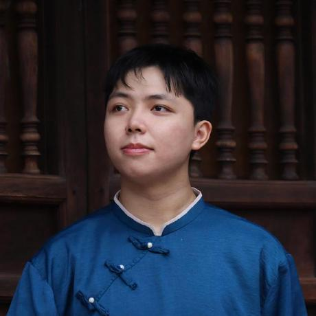
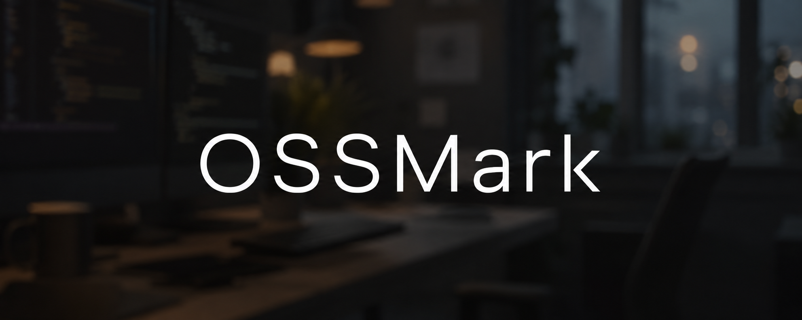
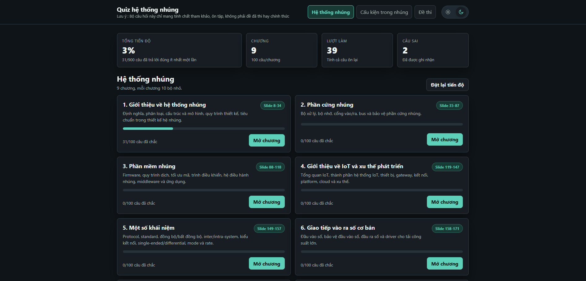

01
Documentation · Agent skill
write-me-a-readme
An evidence-based README generation agent skill.
- Input
- Repository evidence
- Transform
- README generation skill
- Proof
- Structured project documentation
Port 00 · Embedded Systems / IoT / Edge AI
Building dependable systems where hardware, software, and intelligence meet.

Three repositories show the range: documentation intelligence, open-source infrastructure, and embedded-systems learning.
Documentation · Agent skill
An evidence-based README generation agent skill.

Local-first · Audit tool
A local-first OSS launch and agent-readiness audit tool.

Embedded systems · Study application
An embedded-systems study and practice application.
Thuận’s work crosses the boundary between physical signals and software systems: embedded hardware, protocol-level communication, real-time processing, machine learning, and the tools that make technical work legible.
A live, source-backed index. New public repositories merge in automatically; missing descriptions remain honest.
Loading the bundled GitHub snapshot…
Custom Yamaha USB MIDI driver and virtual keyboard.
ReadGitHigh-concurrency IoT sensor data simulator.
ReadGitMPEC Lab work.
ReadGitCNN and GPU implementation work.
ReadGitCUDA and parallel-programming work.
ReadGitArduino and IoT project collection.
ReadGit